How it works
Big soft lights are expensive because of the frame. This one has no rigid frame at all: the LEDs sit on a denim panel lined with silver reflector, and a bicycle inner tube threaded through fabric sleeves around the edge inflates to hold a diffusion sheet a few centimetres off the LEDs. Let the air out and the whole thing folds up like a jacket.
Swipe sideways to see the whole diagram ↔
Parts & cost
Prices are what I actually paid in Australian dollars, in 2026. Most are bulk quantities (a 5 m reel, a roll of cable) and I only used some of it, but it felt more honest to list what I spent than what I used. Links are the exact listings I bought; swap in whatever you can get locally.
| Part | Spec / notes | Paid |
|---|---|---|
| LED strip | Auxmer CCT 2700–5500 K, DC 24 V, white PCB, 120 LEDs/m, 9.6 W/m, CRI 95, 5 m reel. Three contacts: V+, CW, WW. | $40 |
| Silicone cable | 24 AWG, three colours (for V+, CW, WW). Harness plus jumpers. | $40 |
| Denim | Backing panel and four edge sleeves. | $11 |
| Velcro | Hook and loop, sew-on. Closes the sleeves and holds the diffusion. | $20 |
| Silver reflective cloth | Photographic black/silver reflector fabric, cut to 48 × 68 cm. | $35 |
| Inner tube | 700 × 25C road bike tube. A new one was too short; a worn, stretched tube from my own bike fit perfectly. Ask a bike shop for a dead one. | $16 |
| Ripstop nylon | White 70D, 50 × 70 cm, used doubled over for diffusion. | $1 |
| CCT controller | Wi-Fi Tuya/Smart Life, 2-channel (CW/WW) 24 V dimmer. | $15 |
| Power supply | 24 V / 60 W plug pack, Australian plug, 5.5 × 2.1 mm barrel. | $15 |
| Total spent | $193 | |
Consumables and tools
- Heat shrink: 4 mm 2:1 glue-lined (harness joints) and 6 mm (over the LED strip contacts).
- Soldering iron, solder, flux, wire strippers, a "helping hands" clamp, lighter or heat gun for the heat shrink.
- Sewing machine with a denim needle, hand-sewing needle and strong thread, scissors, tape measure, pins.
- Bike pump that matches your tube's valve.
Part 1 · Electrics
Everything is 24 V DC, so it's safe to work on, but the current adds up: eight 60 cm strips is 4.8 m of strip at 9.6 W/m, about 46 W, or roughly 1.9 A on the V+ line. Keep joints clean and keep the harness short.
Swipe sideways to see the whole diagram ↔
Cut the LED strips
Cut eight 60 cm lengths from the reel at the marked cut lines (on this strip the cut points are every 10 cm, so 60 cm is six segments). That uses 4.8 m of the 5 m reel. Each strip has three solder pads at the cut end: +, CW and WW.
Tin all 24 pads now while the strips are flat on the bench. It's far easier than doing it later.
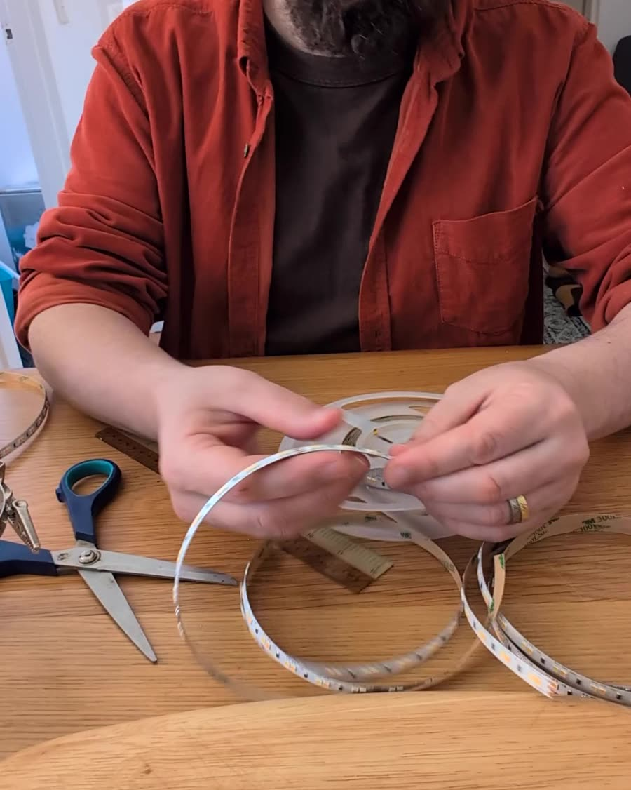
Make the harness
The harness is three lengths of 24 AWG silicone cable, one each for V+, CW and WW, running along one short edge of the panel. Instead of cutting the wire at every strip, open a small window in the insulation every 5 cm (including right at the tip) so there's bare copper to solder a jumper onto. Eight windows per wire, one per strip.
Cut 24 jumpers of 7 cm (three per strip). Solder one end of each jumper into a window, then slide a piece of 4 mm glue-lined heat shrink over the joint and shrink it. The glue lining matters: these joints get flexed every time the light is folded.
Leave a generous tail at the start of the harness to reach the controller.
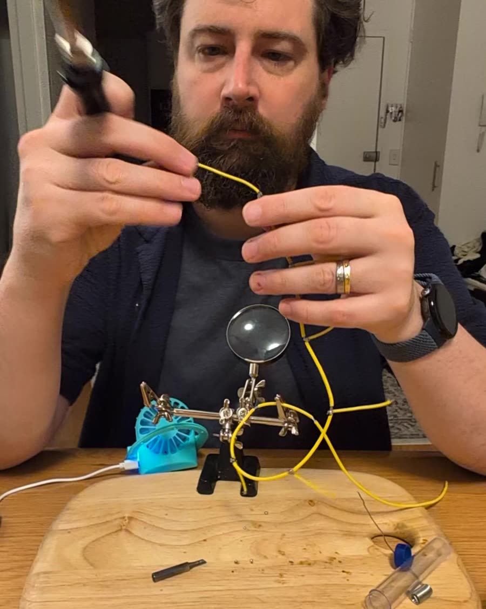
Swipe sideways to see the whole diagram ↔
Solder the strips on and test
Solder the free end of each jumper trio onto the matching pads of a strip: red to +, and the other two to CW and WW. Keep the colour code consistent across all eight strips or you'll get a strip that warms when the others cool.
Slide 6 mm heat shrink over each strip end before soldering, then shrink it down over the pads once they're done. Now wire the harness tail into the controller (V+, CW, WW terminals), plug in the power supply and test every strip at both ends of the colour range before any sewing happens.
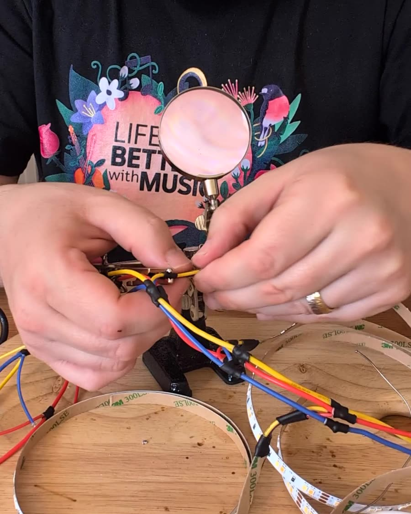
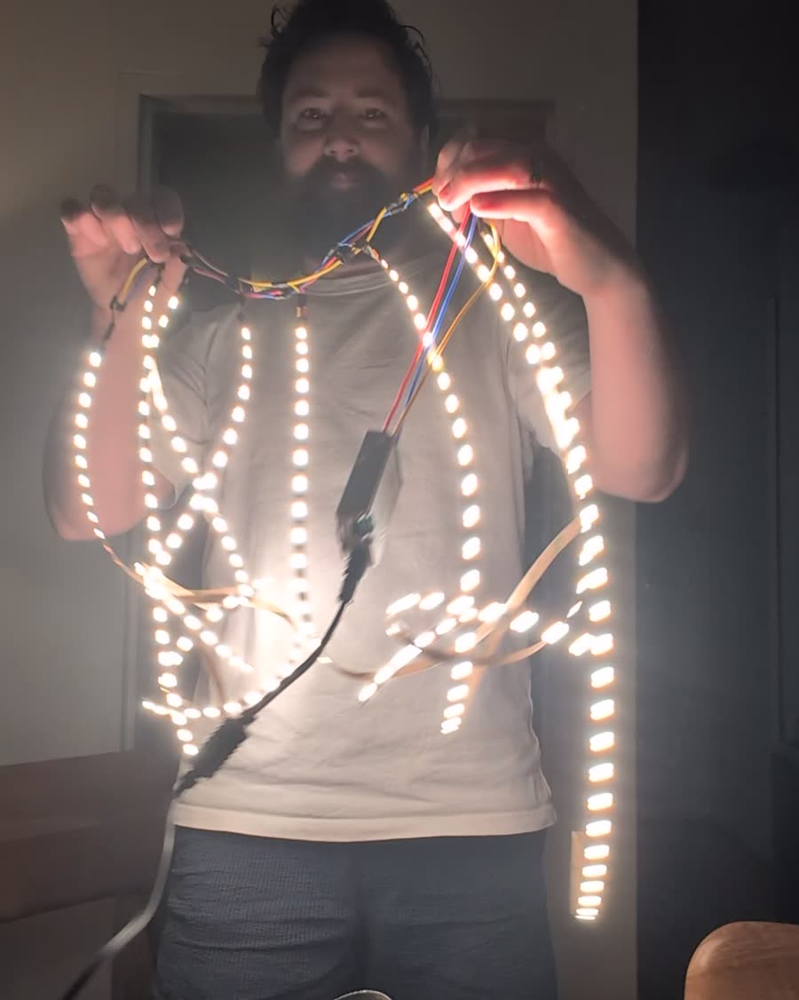
Part 2 · Fabric frame
All pieces include a 1 cm seam allowance on every edge. Finished dimensions are in bold, cut dimensions in brackets.
Swipe sideways to see the whole diagram ↔
Hem the backing and cut the sleeves
Cut the denim backing to 50 × 70 cm and fold and press a 1 cm hem on all sides. Cut four denim strips 15 cm wide (plus allowance), two matching the long sides and two matching the short sides. Hem the short ends of each strip.
Why 15 cm? Wrapped around a 25 mm road tube the sleeve has a lot of slack. That slack is what lets a stretched, rectangular-ish tube sit in the sleeve without fighting it, and it gives you a fat, pillowy border that lifts the diffusion well clear of the LEDs.
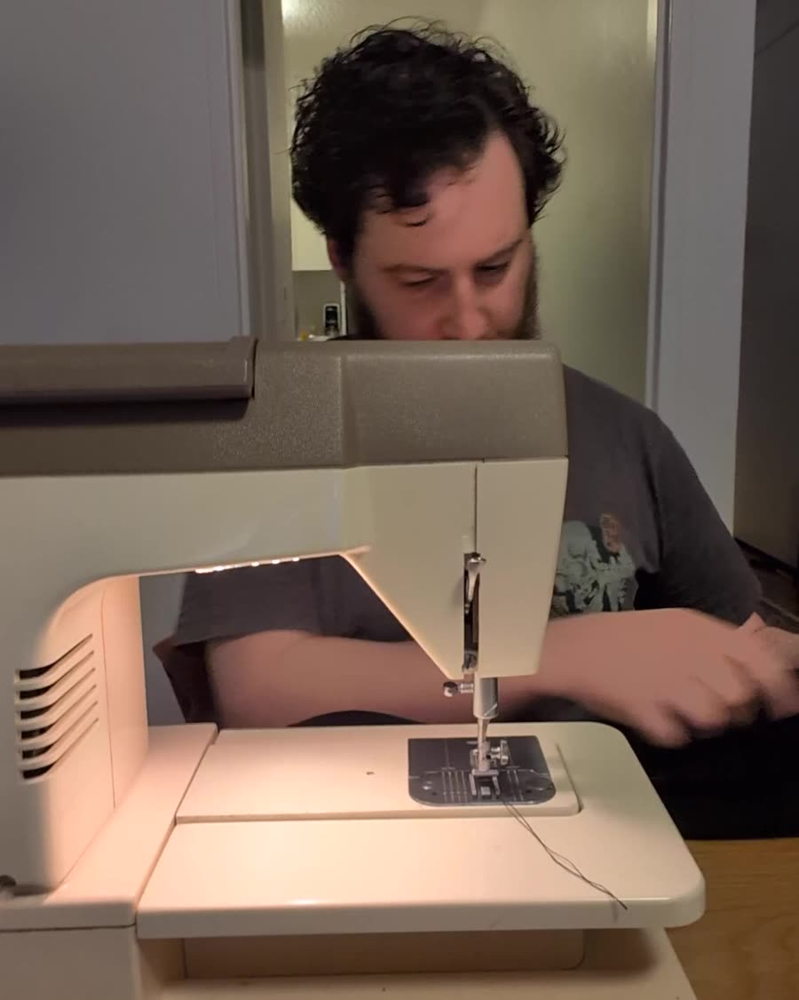
Add Velcro to the sleeves
Each sleeve gets two Velcro strips before it's attached:
- Loop (soft) side, sewn down the middle of the outside face, running the full length. The diffusion's hook edge grabs onto this once the frame is inflated.
- Hook (scratchy) side along the far long edge, on the inside face. This closes the sleeve into a tube.
The sleeve closes with Velcro rather than a sewn seam on purpose: you need to get the inner tube in and out, and I swapped tubes twice before the frame was right.
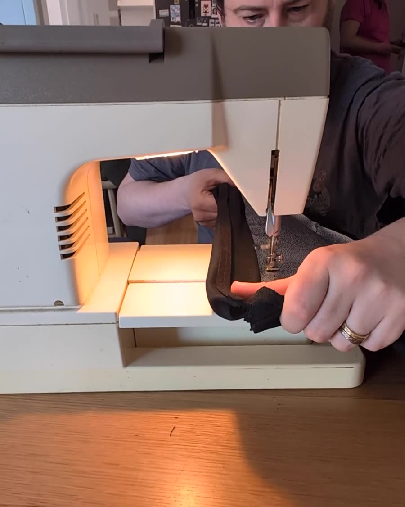
Sew the sleeves to the backing
Lay a sleeve along one edge of the backing, right sides together, with a strip of loop Velcro sandwiched in the seam so that it ends up on the backing side. Sew the three layers (backing, Velcro, sleeve) together along that edge. Repeat on all four sides.
When the sleeve is wrapped around the tube, its hook edge mates with this loop strip, and the sleeve becomes a closed tube anchored to the panel edge. Finally, blanket-stitch each pair of adjacent sleeves together at the corners, up as far as the central Velcro line, so the corners hold their shape when inflated.
While you're at the top two corners, hand-sew a short tab of hook Velcro to the back of each one (the inflated corner is too bulky for the machine). That's the whole hanging system: two matching loop tabs stuck to the wall, and the light presses on and pulls off.
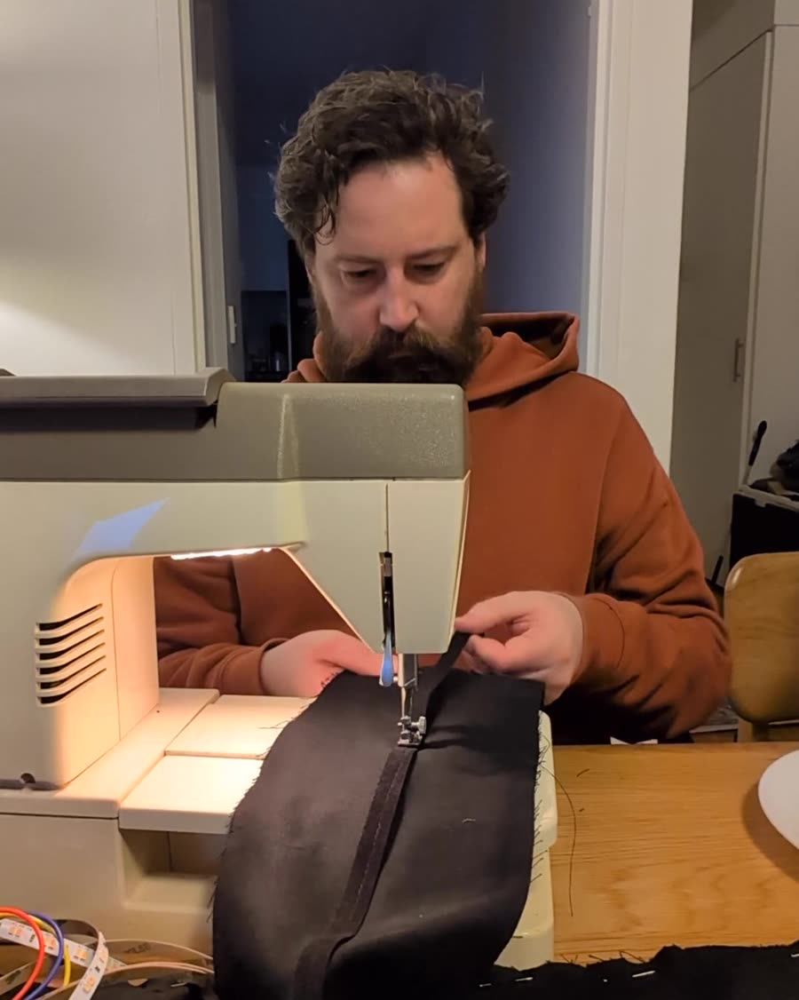
Swipe sideways to see the whole diagram ↔
Part 3 · Assembly
Line the backing with reflector
Cut the silver cloth to exactly 48 × 68 cm, the finished inside of the backing, silver side up, and attach it to the backing. I stitched it round the edge; the LED stitching in the next step pins it down across the middle. It bounces back the light that would otherwise soak into the denim, and it's the main reason the panel is as bright as it is.
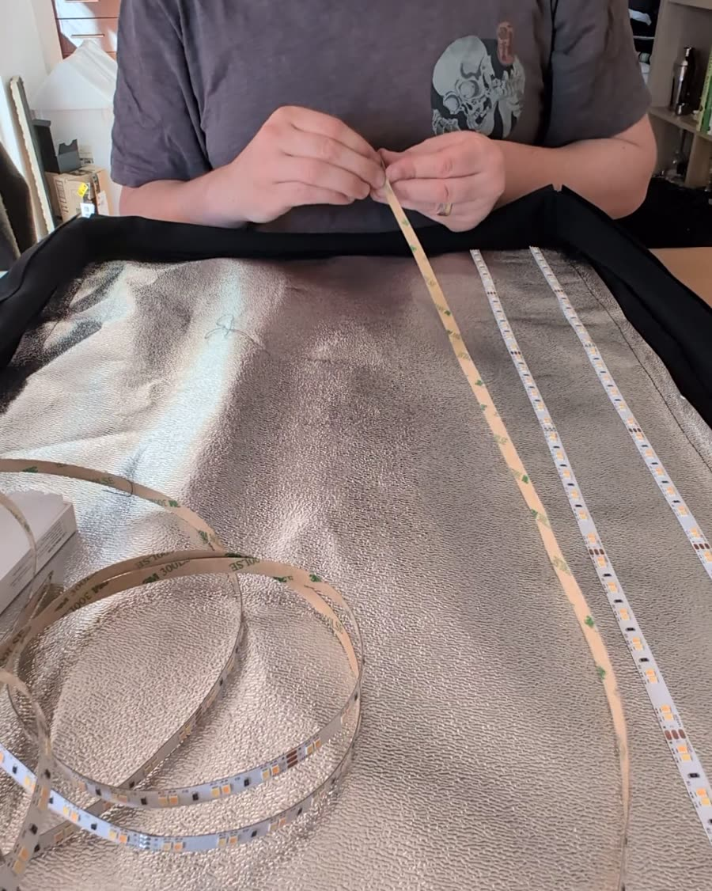
Swipe sideways to see the whole diagram ↔
Stitch the harness and LEDs down
Lay the harness along the top short edge with the tail exiting at a corner. Hand-stitch it to the backing between each pair of joints and again where each jumper trio meets its strip, so a tug on the cable can't reach a solder joint.
Peel the 3M backing and stick the strips down at roughly 6 cm spacing, parallel to the long edge. Don't trust the adhesive on fabric: hand-stitch across every strip every 20 cm, and make sure you catch the very start and very end of each one. Three or four loops of strong thread over the strip between LEDs is enough.
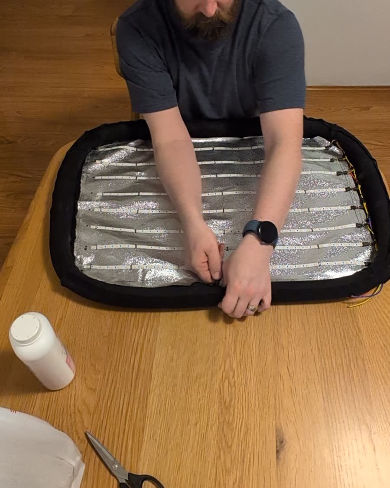
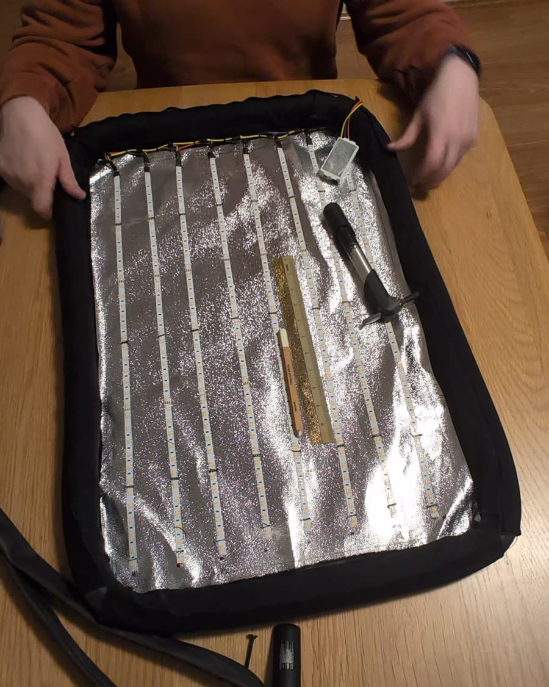
Fit the inner tube
Thread the inner tube through all four sleeves and close each sleeve onto its seam Velcro. Position the valve near a corner where you can reach it. Pump until the border is firm but not drum tight; the fabric does the shaping, the tube just needs to hold it there.
A new 700 × 25C tube was too short for a 48 × 68 rectangle and refused to go round the corners. Warming and stretching it didn't help. An old, well-used tube from my own bike had already stretched and softened and sat in the frame happily. So: ask a bike shop for a punctured 700C tube and patch it, or ride a new one for a season first.
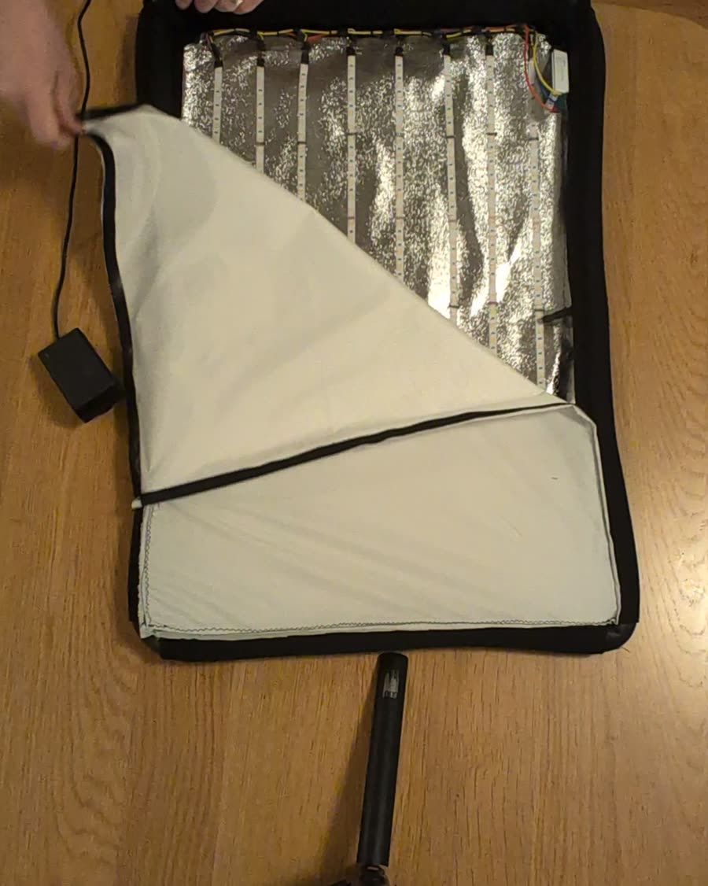
Diffusion
Fold the 50 × 70 cm ripstop nylon so you have two layers (one layer is too thin and you'll see the strips as stripes). Sew hook Velcro around the edge of the doubled sheet. With the frame inflated, press the sheet onto the loop line running round the outside of the sleeves. It should sit flat and slightly taut across the top of the inflated border, a few centimetres above the LEDs.
The diffusion also pulls the four sleeves into a true rectangle. Before it's on, the inflated frame is a bit of a blob; after, it's a panel.
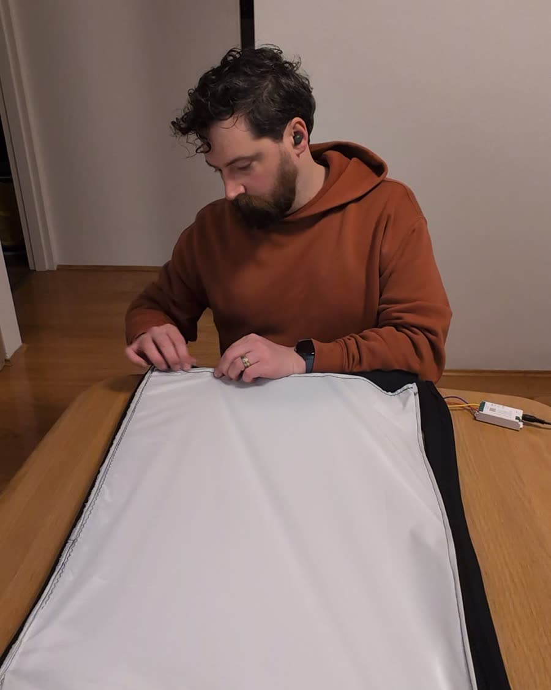
Controller, power, pair
Wire the harness tail into the controller's output terminals (V+, CW, WW), plug the 24 V supply into its input, and pair the controller with the Tuya / Smart Life app. You get brightness and colour temperature from your phone, and you can add it to a scene with your other lights. Tuck the controller into the corner of the frame and hang the light up.
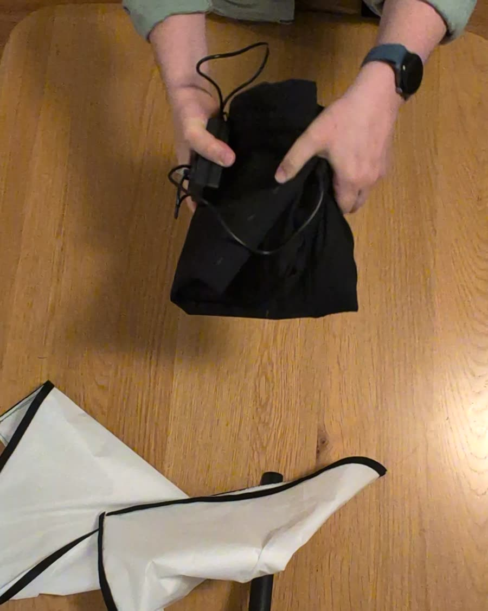
Using it
It hangs on the wall above my monitors and fills the room with soft, even light with no hot spots, even at the 6 cm strip spacing I was nervous about. Dial in 5500 K for daylight-balanced video calls, or warm it right down for an evening piece to camera. It hangs from a hook Velcro tab on the back of each top corner, mated to two loop tabs on the wall; it weighs so little that's all it needs, and taking it down is a one-handed pull. Because it has no frame, you can also bend it slightly to wrap the light around you.
Swipe sideways to see the whole diagram ↔
To pack it, pull off the diffusion, open the valve, fold it in thirds and roll the diffusion around it. It fits in a laptop bag with the power supply.
Fork it, improve it
This page lives in a GitHub repository, so if you build one, change something, or spot a mistake, open an issue or a pull request. Things I'd like to see someone try:
- A bigger version (say 60 × 90 cm) with a thicker harness and a 100 W supply.
- USB-PD or V-mount battery power for shooting away from a wall socket.
- A way to mount it on a light stand or boom, for use away from a wall.
- A cheaper reflector. The photographic silver cloth is the second most expensive part; emergency blanket might do.
- A proper pattern PDF with the pieces laid out for printing.
- A Home Assistant or DMX-controlled dimmer in place of the Tuya box.